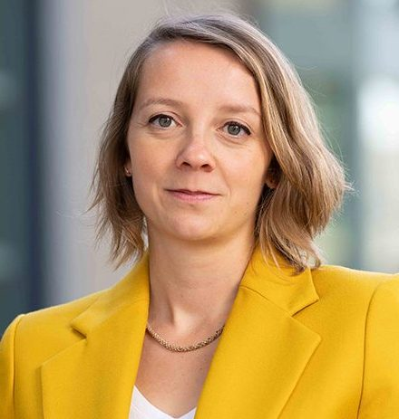
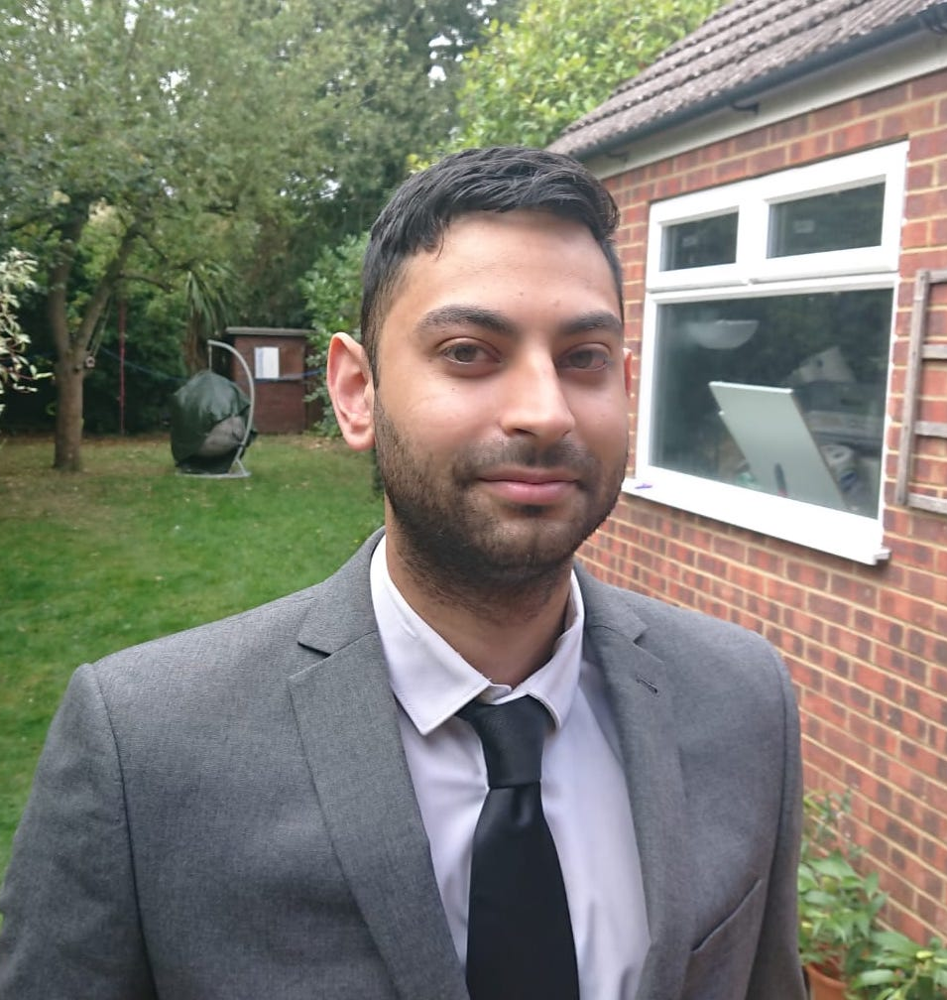
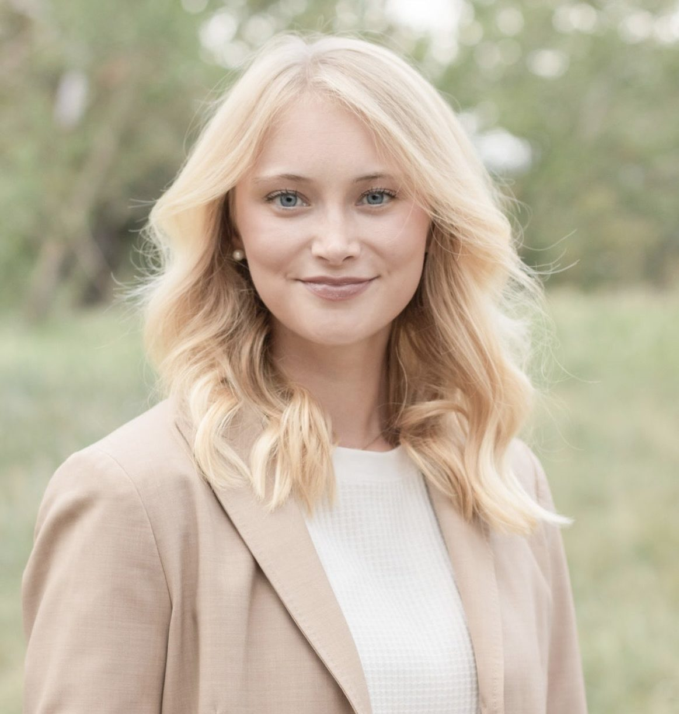

Solène Delecourt
UC Berkeley, HAAS
Solène Delecourt is an assistant professor in the Management of Organizations Group at the Haas School of Business.
HomePageThe I2D2 project is working to develop and provide new managerial training materials and programs for scientists with the goal of improving coordination, communication, and organization in scientific teams.

Solène Delecourt is an assistant professor in the Management of Organizations Group at the Haas School of Business.
HomePageRem Koning is the Mary V. and Mark A. Stevens Associate Professor of Business Administration at Harvard Business School.
HomePageKyle Myers is an associate professor of business administration in the Technology and Operations Management unit.
HomePage
Kris Gulati is an economics PhD student working on the economics of science and innovation. He is currently visiting Berkeley Haas.
HomePage
Katelyn Cranney was the project manager for I2D2 and is now an economics PhD student at Stanford University.
HomePage